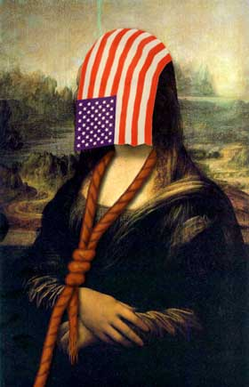

|

Pity about the Louvre
War is good, said Bush as the Louvre fell to looters.
- - - - - - - - - -
by Simon Jenkins
 HE FALL OF FRANCE was astonishingly swift. After regime change in Afghanistan, Iraq and Syria, it was only a matter of time before Tony Blair and George W. Bush said that they had "no plans" to attack France. The detested Jacques Chirac had long been a thorn in their sides. He was a past friend of Saddam Hussein, welcomed Arab exiles and had a suspiciously large Muslim population. Above all, he refused point-blank to disband his force de frappe weapons of mass destruction. As Donald Rumsfeld had said back in 2003: "Things mean consequences." France posed a clear and immediate threat. The coalition acted in pre-emptive self-defence. It was a pity about the Louvre. HE FALL OF FRANCE was astonishingly swift. After regime change in Afghanistan, Iraq and Syria, it was only a matter of time before Tony Blair and George W. Bush said that they had "no plans" to attack France. The detested Jacques Chirac had long been a thorn in their sides. He was a past friend of Saddam Hussein, welcomed Arab exiles and had a suspiciously large Muslim population. Above all, he refused point-blank to disband his force de frappe weapons of mass destruction. As Donald Rumsfeld had said back in 2003: "Things mean consequences." France posed a clear and immediate threat. The coalition acted in pre-emptive self-defence. It was a pity about the Louvre.
Coalition forces again fought "battle-lite". The application of shock-and-awe to Caen and Rouen and the blasting of infrastructure targets round Paris devastated French morale. A re-enactment of Operation Overlord saw the 21st Army Group reform in Hampshire and storm ashore at Normandy's Omaha and Utah beaches. Veteran units of the 101st Airborne were allowed to seize Pegasus Bridge, again. The Marine Corps had Steven Spielberg and Tom Hanks "embedded".
The looting of the Louvre was regretted, but not stopped. Wild scenes greeted the arrival of the Mona Lisa at the Metropolitan, in New York. A shadow government was soon established in a town called Vichy.
|
The A13 to Paris was quickly secured. Predictions of a last stand in the capital's streets by Gaullist Resistance irregulars on barricades proved groundless. GPS-guided missiles took out regime buildings on the Ile de la Cité, Quai d'Orsay and Les Invalides. The Elysée presidential palace "complex" was soon a 50 ft crater. The looting of the Louvre was regretted, but not stopped. Wild scenes greeted the arrival of the Mona Lisa at the Metropolitan, in New York. A shadow government was soon established in a town called Vichy.
By general agreement, France had it coming. There was no lack of support in Britain for Mr Blair joining America in this one. The British public had grown used to being "at war". It stopped schools and hospitals from hogging the news. Long-standing Francophobia had been fuelled in the 1990s by French boycotts of British farm produce and refusal to obey European laws. Fury was increased by French companies buying up British water and rail utilities and sending prices rocketing.
In an episode of the popular series Yes, Prime Minister in the 1980s, Sir Humphrey explained the Defence Ministry's missile-targeting strategy to his bemused Prime Minister, Jim Hacker. Intercontinental missiles were not aimed at Russia or America, he said. That would be reckless. They had always been aimed, of course, at France. All Britain's air and naval power was concentrated in the South East. From Henrician forts through Martello towers to 20th-century airfields and gun batteries, everything pointed at France. It was France that could not be trusted.
By the time of Baghdad, satire had become reality and a British prime minister needed no persuading. BSE, foot-and-mouth and M Chirac's denial of a resolution before the Second Gulf War had left Mr Blair enraged. Historians later wondered why he had tolerated so long the mind-numbing Euro-summits and bilaterals with the duplicitous M Chirac.
Mr Blair would never again have to shake that man by the hand. When push came to shove and the RAF eagle once more swooped over the Channel, everything felt right. As Geoff Hoon's cluster bombs fell on Paris, The Sun pictured "Frogs and Chips" and The Mirror replied with "French Fried At Last".
The turn in American foreign policy at the start of the 21st century saw its final liberation from Cold War inhibition over the use of force. It was a reprise of the Wall Street maxim, "Greed is good”. War was good.
|
Despite the anarchy of post-conquest Afghanistan and Iraq, Washington's hawks never lost the initiative after April 2003. Kenneth Adelman, Mr Rumsfeld's alter ego, told The Washington Post in April that year "not to argue with success". Iraq had, as he predicted, been a cakewalk. Victory was real. In future, Mr Adelman went on, "I hope it emboldens leaders to drastic, not measured, approaches."
American strategists became convinced that, with communism out of the way, America's global duty was to take a leaf from its book. In future foreign relations would be as of old, essentially about war. As Mr Bush said after Baghdad, it was "just a question of one thing at a time". His Pentagon adviser, Richard Perle, added his weight to the domino strategy. Interviewed by the International Herald Tribune on the fall of Baghdad, he declared: "If the question is who poses a threat that the United States deal with, then the list is well known. It's Iran. It's North Korea. It's Syria. It's Libya, and I could go on."
Go on he did. He went on to France. That country's overwhelming support for Saddam was too much for America to bear. Small wonder Washington had renamed French fries "freedom fries". Mr Perle doubted whether there could ever be constructive relations between America and France again. "I am afraid this is not something that is easily patched up and cannot be dealt with simply in the normal diplomatic way, because feeling runs too deep," he said ominously. "It's gone way beyond the diplomats." France could hardly complain it was not warned.
The turn in American foreign policy at the start of the 21st century saw its final liberation from Cold War inhibition over the use of force. It was a reprise of the Wall Street maxim, "Greed is good". War was good. The ease with which regimes fell to the bombardier and the tank seemed to render archaic the niceties of 20th-century collective security. In apparently eternal trauma over "9/11", America expected understanding, support and obedience as it thrashed about the world in its rage and saw terrorists under every bed. Why bother with the old constraints? War worked.
It was rather adventurism. American foreign policy did mergers and acquisitions, not management. They could topple but, as they found in Kabul and Baghdad, they had no clue about rebuilding. They just wanted to make a point.
|
Key to this new strategy was that it could be implemented, thanks to the revolution brought by Mr Rumsfeld to the Pentagon in 2002-04. His "fight light, fight fast and bomb heavy" strategy terrorised and subdued enemies whose armies simply declined to fight. Mr Rumsfeld calculated, as had the German Army in 1938-39, that future wars had above all to move fast. They had to disorientate the enemy, economise on resources and keep an attendant media interested and supportive. They had to be short-burst.
Mr Rumsfeld swept aside the costly Colin Powell doctrine of overwhelming force. He cancelled helicopters, heavy tanks and artillery. He sold the State Department to Holiday Inns. Saddam had been toppled with half the troops used in Kuwait. Even so, the Second Gulf War had almost lost momentum after two weeks outside Baghdad, suggesting that even two weeks was a risk. If American forces could only hit fast and hard enough and not care about consequences, Mr Rumsfeld could topple any rogue state on Earth. Given the domestic popularity they could deliver to the White House, why stop?
In these circumstances, the new Washington elite argued that America need not bother with ambassadors, treaties, international law, Nato or the United Nations. Why sign up to landmine conventions, war crimes tribunals and non-proliferation treaties? Of America's friends abroad, only the British cared about these things, and after a bit of schmoozing they always did what they were told. By definition, nobody can guard the last guardian. Ultimate power can only legitimise itself. Why should America care about some snivelling European wielding a two-bit UN veto?
The toppling of the Chirac regime was the inevitable application of this ideology. It was not imperialism. Washington had no desire to stick around when the cameras had already been directed to a new rogue. It was rather adventurism. American foreign policy did mergers and acquisitions, not management. They could topple but, as they found in Kabul and Baghdad, they had no clue about rebuilding. They just wanted to make a point. Upset Uncle Sam and you will lose your power, your palace, your art treasures and bring death and destruction to your cities.
Tony Blair cheered the fall of France. He, too, had his reasons. He had longed to see M Chirac with a bloody nose. Since 2002 he had supported America's new coercive diplomacy and grown hugely popular as a result. Not since Palmerston had nations quaked when a British leader said he had "no plans" to attack them. Now Mr Blair might be America's chosen candidate for president of Europe. Anyway, Britain was in bed with America and could hardly climb out now. Washington would not like that. Mr Blair would not want a nasty hole at the end of The Mall, would he?
Copyright 2003 Times Newspapers Ltd.
Reprinted from The Times Of London:

|